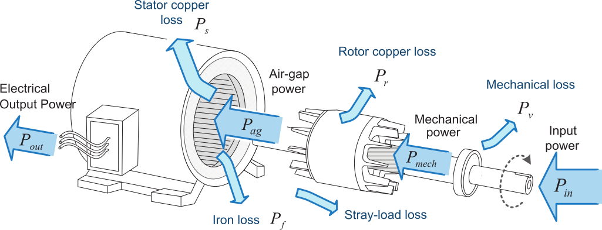
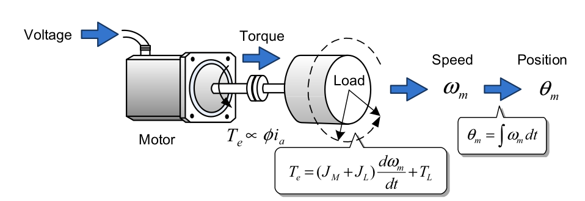
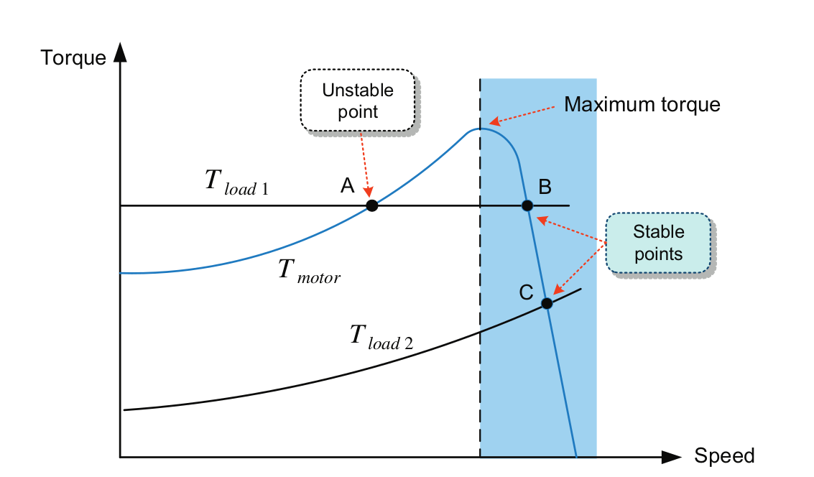

class: center, middle # EE-362 ELECTROMECHANICAL ENERGY CONVERSION-II # Starting Methods and Operating Modes of Induction Machines ## Ozan Keysan [keysan.me](http://keysan.me) Office: C-113 <span class="meta">•</span> Tel: 210 7586 <!-- # Example ### A Y-connected 480 V(l-l), 50 hp induction motor is drawing 60 A at 0.85 pf lagging. The stator copper losses are 2kW and the rotor copper losses are 700W. The friction and windage losses are 600 W, the core losses are 1800 W and the stray losses are negligible, find: - ### The air gap power. - ### The gross mechanical power. - ### The net output power. - ### The efficiency of the motor --> --- # Induction Motors ## HMS Queen Elizabeth, Aircraft Carrier --- # Induction Motors ## 20 MW Induction Motor for [HMS Queen Elizabeth](https://en.wikipedia.org/wiki/HMS_Queen_Elizabeth_(R08) --- # Induction Motors ### Single Line Diagram of HMS Queen Elizabeth Power System --- #Typical Torque Curve of an Induction Motor <img src="https://engineering.louisville.edu/raise/ECE252/images/L19-18.gif" alt="Drawing" style="width: 600px;"/> ## [Torque Graphs](https://docs.google.com/spreadsheets/d/1YVq94hV64z6VSiN8q-v7XydcfLR3xLdcp-5GhdYZg6Y/edit?usp=sharing) <!-- # Maximum Torque Point <img src="http://raise.spd.louisville.edu/ECE252/images/L19-18.gif" alt="Drawing" style="width: 400px;"/> ### \\(s\_{maxT}= \dfrac{r'\_2}{\sqrt{R\_{th}^2+ (X\_{th}+X'\_2)^2}}\\) # Maximum Torque Point <img src="http://raise.spd.louisville.edu/ECE252/images/L19-18.gif" alt="Drawing" style="width: 400px;"/> ### \\(T\_{max} = 3 \dfrac{ 0.5 V\_{th}^2}{\omega\_s}\dfrac{1}{(R\_{th}+\sqrt{R\_{th}^2 + (X\_{th}+X'\_2)^2}}\\) # Maximum Power Point ### \\(s\_{maxP}= \dfrac{r'\_2}{r'\_2 + \sqrt{(R\_{th}+r'\_2)^2+ (X\_{th}+X'\_2)^2}}\\) # \\(s\_{maxT} \ne s\_{maxP} \\) --> --- ## What is wrong with directly connecting motor to a constant voltage supply (i.e. grid)? -- - ## High Start-up Current -- - ## Low(or high) Torque at Start-up <img src="http://www.ibiblio.org/kuphaldt/electricCircuits/AC/02473.png" alt="Drawing" style="width: 550px;"/> --- # Starting Methods (Source Side): -- ## 1- Use Auto-transformer (Variac) <img src="https://www.elprocus.com/wp-content/uploads/2014/03/82.jpg" alt="Drawing" style="width: 250px;"/> ### Apply a smaller voltage during start-up, and increase it gradually. ### Remember: Torque \\( \propto V^2 \\) --- # Starting Methods (Source Side): ## 2- Use (\\(Y - \Delta \\)) switch <img src="http://epub1.rockwellautomation.com/images/web-proof-large/GL/1244996.jpg" alt="Drawing" style="width: 200px;"/> <img src="https://circuitglobe.com/wp-content/uploads/2016/01/star-delta-starter-defintion.jpg" alt="Drawing" style="width: 300px;"/> --- # Starting Methods (Source Side): ## 3- Soft Starters [Soft Starters](https://www.youtube.com/watch?v=PjhhOgud4Lo), [Soft starter vs Motor Drive](https://www.youtube.com/watch?v=kX0LKxeIobc&list=PLuu0KknSI2tSmpnQjFdCKD0m0-4Jmyi79) --- # Starting Methods (Source Side): ## 4- Induction Motor Drives ### Variable Voltage-Frequency Source (or Variable Frequency Drives) <img src="https://i.stack.imgur.com/ygyr8.jpg" alt="Drawing" style="width: 600px;"/> --- # Starting Methods (Source Side): ## 4- Induction Motor Drives ### Variable Voltage-Frequency Source (or Variable Frequency Drives) <img src="https://i.stack.imgur.com/bBNPA.gif" alt="Drawing" style="width: 800px;"/> --- # Starting Methods Comparison: <img src="https://img1.daumcdn.net/thumb/R1280x0/?scode=mtistory2&fname=https%3A%2F%2Fblog.kakaocdn.net%2Fdn%2Fb891d5%2Fbtq5uHB9RpE%2FMzqD47s0ncSjU4QDEpOer1%2Fimg.png" alt="Drawing" style="width: 650px;"/> --- # Starting Methods (Machine Side): ## How to increase the starting torque, but reduce the starting current at the same time? -- ### \\(s\_{maxT}= \dfrac{r'\_2}{\sqrt{R\_{1}^2+ (X\_{1}+X'\_2)^2}}\\) ### \\(T\_{max} = 3 \dfrac{ 0.5 V^2}{\omega\_s}\dfrac{1}{(R\_{1}+\sqrt{R\_{1}^2 + (X\_{1}+X'\_2)^2}}\\) --- # Starting Methods (Machine Side): ## Increase rotor resistance (\\(r'\_2\\)) #### [Torque Graphs](https://docs.google.com/spreadsheets/d/1YVq94hV64z6VSiN8q-v7XydcfLR3xLdcp-5GhdYZg6Y/edit?usp=sharing) --- # Starting Methods (Machine Side): ## Increase rotor resistance (\\(r'\_2\\)) --- # How to modify (\\(r'\_2\\))? ## 1 - Add External Resistor -- : Easy for wound rotor induction motors by using external resistance <img src="http://2.bp.blogspot.com/-b6IINDAxm8s/UekbU9vx-jI/AAAAAAAAAV8/DWLjglfjOxs/s1600/Untitled.png" alt="Drawing" style="width: 700px;"/> --- # How to modify (\\(r'\_2\\)) for squirrel cage motors? -- ## 2 - Use Deep Rotor Bars: Utilize rotor resistance change with skin effect -- --- # Rotor Bar Shapes <img src="./images/ee362/rotor_bars.png" alt="Drawing" style="width: 500px;"/> For curious students: [Rotor design](http://www.mhhe.com/engcs/electrical/chapman/fundamentals/ind_motor.pdf) --- # Complete Torque Characteristics ## Can slip be larger than 1, or can it be less than 0? -- <img src="./images/ee362/induction_torque.png" alt="Drawing" style="width: 650px;"/> --- ### Full Operating Range of Induction Machines <img src="./images/ee362/induction_torque.png" alt="Drawing" style="width: 800px;"/> --- # Operation Modes of Induction Motors # 1- Motoring # 2- Generating # 3- Braking (Plugging) --- # Motoring ## Slip: \\(0 < s < 1\\) ## Power Flow: Electrical to Mechanical <img src="./images/ee362/induction_motor_power_flow.png" alt="Drawing" style="width: 800px;"/> --- # Generating ## Slip: \\(s < 0\\) ## Power Flow: Mechanical to Electrical  --- # Braking (Plugging) ### Slip: \\(s > 1\\) ## Power Flow: Mechanical+Electrical to Heat <img src="https://3.bp.blogspot.com/-Y_HjqnZLkig/Vs1oeZuSv0I/AAAAAAAAA64/z0xwXGgqfR4/s1600/plugging-on-induction-motor.jpeg" alt="Drawing" style="width: 600px;"/> ### Plugging obtained by interchanging two stator phases --- # Machine Dynamics ## Torque Balance Equation ## \\(T\_{elec} - T\_{load} = J \dfrac{d \omega}{dt} \\)  --- ### If there is no difference between the electrical torque and load torque, the machine operates at the steady-state ### (i.e. the intersection point at between the motor torque line and the load torque line).  ### but beware of unstable intersection points. --- # Four-Quadrant Operation <img src="http://lh4.ggpht.com/_X6JnoL0U4BY/S1hWPpFVASI/AAAAAAAAH6g/2f2K5R2I-I0/tmp2B719_thumb1_thumb.png" alt="Drawing" style="width: 800px;"/> --- ## You can download this presentation from: [keysan.me/ee362](http://keysan.me/ee362)